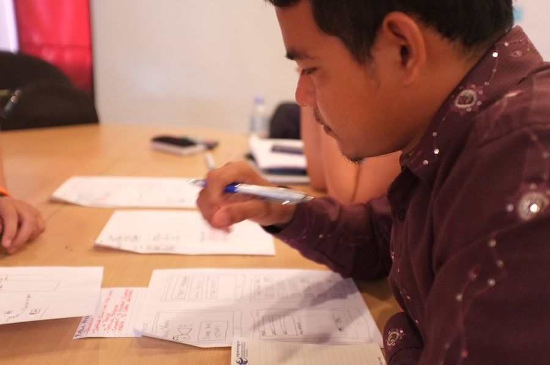
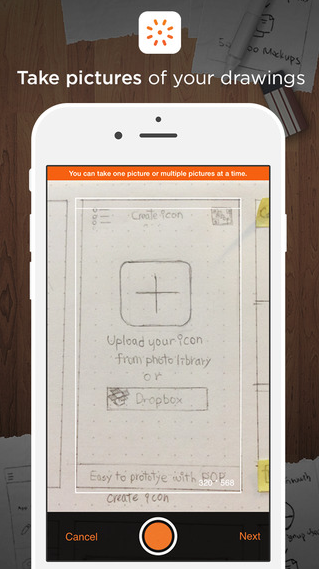
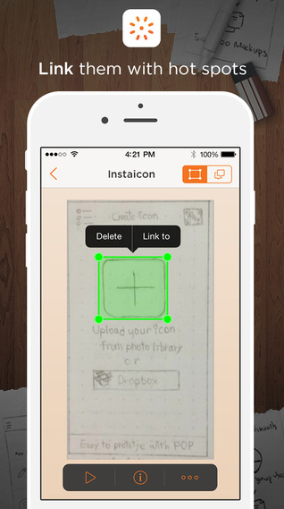

Develop
While you may want a designer or developer helping you through this stage, it is also possible for anyone to come up with the ideas and start communicating them to others through prototypes.
Sketching
Anyone can take a pen to paper and start drawing out ideas. Basic shapes (circles, squares, rectangles), lines, arrows, and stick figures are enough to get your ideas out for others. What matters isn’t your artistic ability, but your ability to explain different concepts. Sketches offer a peek into your thinking and will allow the designers and developers you work with understand your ideas. Sketching helps separate the concepts from the details.
Step 1 of 5
You have an idea, but you need to start translating that idea into a mobile app interface. Now’s the time to start thinking about what that could look like. Start by printing out a template for you to begin your sketching exercises.
Step 2 of 5
It’s not enough to say, “I want an app that does X, Y, and Z”. You need to know what the user will see on each screen of your app to do X, Y, and Z. Look at examples that you found during the research and see what kind of interfaces that you could use from there and apply to the app you want to create.
Step 3 of 5
Good storytelling is the key to designing great mobile apps. Start to think through a series of narrative use-cases for your app that illustrate every step in the user’s journey through it. For example, a woman is walking home late at night and notices an act of violence happening on the street. She wants to report it, so she opens Safe Agent 008 app, and clicks on the reporting feature. She then fills out a form and submits it.
Step 4 of 5
Now that you’ve defined your story, identify the parts where there is an interaction with the mobile app. In the above example, you should design out what the screen will look like when the woman first opens up the Safe Agent 008 app. Think through where the user will find the information they need for reporting, and how they will get to that feature. Sketch out what the form will look like. And sketch out what will happen after the person clicks on the submit button.
Step 5 of 5
Think through as many of the use-cases as you can and try to sketch out what those screens will look like. Think through what screen will appear after you tap on a button, and create a sketch of that. By the end of this exercise, you should have enough screens to build a working prototype of your app.
Prototyping
Now that you have some sketches of the mobile app you want to build, it’s time to get that into a prototype that you can test in the field. There are many different kinds of prototypes that you can create that involve studying visual design and coding. However, there are simple types of prototypes that anyone can build using some simple software and the sketches you’ve just made.
You want to mimic the experience that a user will have when the app is fully developed. So, you want to build screens that are “clickable”, where people can touch the screen and the app appears to respond.
The following steps are for building a clickable prototype using POP (Prototyping on Paper), an app that is available on the App Store and Google Play.
Step 1 of 4
Download the POP app and create your own account.
Step 2 of 4
Using the app on your phone, create a new project and select the device that you are using. Hit the “+” button at the bottom left of the screen to take photos of the sketches you made.
Step 3 of 4
Once you have finished uploading all your photos. You can pull up any sketch, and start creating “hotspots” or draw rectangles on areas of the sketches where you want those to be clickable and can take the user to a different screen.
Step 4 of 4

Once you have made all your hotpots on all the different screens, you can hit the play button to see the full clickable prototype. Use a “two finger tap” to quit play mode. Now you’re ready to take your prototype into the field and start testing.